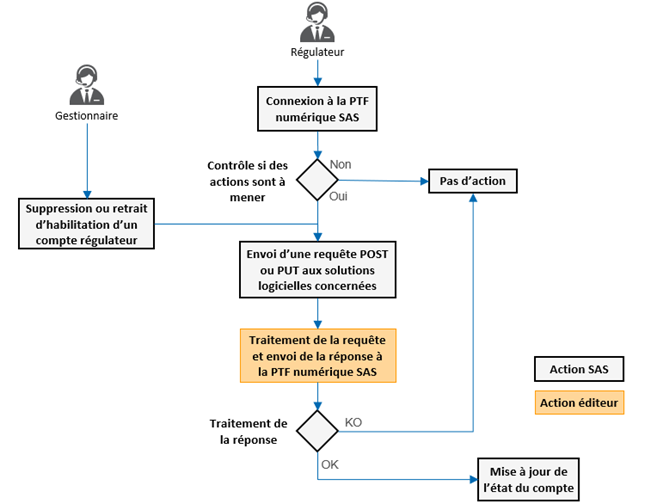

Service d'Accès aux Soins
1.2.0 - trial-implementation

Service d'Accès aux Soins
1.2.0 - trial-implementation

Service d'Accès aux Soins - Local Development build (v1.2.0) built by the FHIR (HL7® FHIR® Standard) Build Tools. See the Directory of published versions
Le Service d'accès aux soins a pour objectif de faciliter l’orientation des patients vers des médecins effecteurs en ville lorsque leur situation ne relève pas d’une urgence médicale. La plateforme numérique SAS, qui s’inscrit dans le cadre du programme SAS, s’appuie sur un agrégateur de disponibilités des professionnels de santé issues de leurs outils sans s’y substituer et a pour enjeu de fluidifier le parcours de prise de RDV pour les régulateurs.
Une première interface, nommée « appel contextuel », permet le lancement d’une recherche d’offre de soins depuis le logiciel de régulation médicale (LRM) dans la plateforme numérique SAS. Cette fonctionnalité, mise en place avec le flux INT_L01, cf. spécifications détaillées, recouvre la syntaxe de l’appel contextuel et la définition des données à transmettre du LRM à la plateforme numérique SAS.
Après avoir effectué une recherche d’offre de soins dans la plateforme numérique SAS, le régulateur sélectionne un créneau de disponibilité et est redirigé vers la plateforme de prise de RDV éditeur sans avoir à se réauthentifier, si ce créneau remonte d’une solution éditeur. Dans la solution éditeur, le régulateur va pouvoir finaliser la prise de RDV pour le compte du patient.
Le régulateur peut également prendre un RDV sur les disponibilités renseignées manuellement dans la plateforme numérique SAS par les effecteurs de soins au sein de l’agenda SAS ou effectuer une recherche d’offre de soins complémentaires incluant la possibilité de contacter les professionnels de santé acceptant de prendre en charge des patients « en sus de leurs disponibilités » et la possibilité de solliciter une communauté de professionnels de santé pour la prise en charge du patient via une solution éditeur interfacée offrant un service de type « Place de marché ».
Une fois la prise de RDV réalisée par le régulateur, les données associées au RDV pris pour le compte du patient sont remontées et enregistrées dans la plateforme numérique SAS.
A ce jour, les API ont pour vocation de répondre aux cas d'usage suivants :
Mise à jour de rendez-vous
Les rendez-vous ainsi centralisés dans la plateforme sont également transmis aux logiciels de régulation médicale (LRM)
Pour les cas d'usage couverts par ces API :
L'objectif de cette interface est de permettre l'agrégation des créneaux de disponibilités des solutions logicielles d'agenda avec prise de RDV dans la plateforme numérique SAS :
Le schéma de présentation générale ci-dessous illustre ce cas d'usage :

|
| Présentation recherche de créneaux PS indiv. - CPTS |
Les créneaux de disponibilités sont renseignés par les professionnels effecteurs de soins ou délégataires dans leur solution logicielle d'agenda. Le flux décrit ci-dessous permet de récupérer et d'afficher dans la plateforme numérique SAS les créneaux selon les modalités définies lors des Groupes de Travail en bilatérales avec l'ANS. Lors d'une recherche d'offre de soins sur la plateforme numérique SAS, le moteur de recherche va s'appuyer sur les référentiels nationaux pour identifier l'offre correspondant aux critères de recherche. Une liste de 1 à 25 RPPS/ADELI est envoyée aux solutions logicielles éditeurs pour identifier les créneaux de disponibilités des professionnels de santé (PS) correspondants. Les types de créneaux remontés dans la plateforme sont :
L’objectif de cette interface est de permettre l’agrégation des créneaux de disponibilités dans la plateforme numérique SAS des professionnels de santé exerçants au sein d’une association SOS Médecins. Ces créneaux sont renseignés dans un logiciel de gestion d’agenda avec prise de rendez-vous.
Le schéma de présentation générale ci-dessous illustre ce cas d’usage :

|
| Présentation recherche de créneaux SOS Médecins |
Les créneaux de disponibilités des Lieux Fixes de Consultation (LFC), lieux de consultation SOS Médecins, sont renseignés par les associations dans les solutions logicielles d’agendas. Le flux décrit ci-dessous permet de récupérer et d’afficher dans la plateforme numérique SAS les créneaux selon les modalités définies lors des Groupes de Travail en bilatérales avec l’ANS. Lors d’une recherche d’offre de soins sur la plateforme numérique SAS, le moteur de recherche va s’appuyer sur les référentiels nationaux enrichis pour identifier l’offre de soins correspondant aux critères de recherche. Une liste de 1 à 10 SIRET, identifiant national de structure (IDNST) d’une association SOS Médecins, est envoyée aux solutions logicielles éditeurs pour identifier les créneaux de disponibilités des Lieux Fixes de Consultation (LFC) correspondants. Les types de créneaux remontés dans la plateforme sont :
L'agrégateur de créneaux fait intervenir de nombreux acteurs, pour la plupart externes au SAS. Il est donc nécessaire de s'assurer d'une technologie commune aux différentes plateformes. Les échanges reposent sur des webservices se basant sur l'API REST du standard HL7 FHIR (R4).
Le schéma ci-dessous illustre les échanges à mettre en oeuvre entre la plateforme numérique SAS, et les différentes solutions interfacées :
La structure de réponse attendue inclut l’ensemble des créneaux de disponibilités correspondant à la requête réalisée par la plateforme numérique SAS. 1 à n créneaux de consultation (Slot) peuvent être rattachés à 1 agenda (Schedule) qui représente 1 lieu de consultation (PractitionerRole), lui-même rattaché à 1 PS (Practitioner). Si des créneaux de consultation sont proposés pour plusieurs lieux de consultation, on aura autant d’agendas (Schedule) que de lieux de consultation (PractitionerRole).
Dans le cas où un créneau CPTS est transmis, la transmission de l’information sur le type de créneau « CPTS » est attendu ainsi que les données de la structure CPTS associée. Au niveau de la structure de réponse, 1 à n créneaux de consultation CPTS (Slot) peuvent être rattachés à 1 ou n prestations de soins (FrHealthcareService) qui sont chacun rattachées à 1 structure CPTS (FrOrganization). Pour le reste de la structure de réponse, celle -ci reste identique à ce qui a été présenté précédemment.
Le schéma ci-dessous présente une synthèse de la structure attendue :
La structure de réponse attendue inclut l’ensemble des créneaux de consultation disponibles correspondant à la requête réalisée par la plateforme numérique SAS. 1 à n créneaux de consultation (Slot) peuvent être rattachés à 1 agenda (Schedule) qui représente 1 lieu fixe de consultation (Location), lui-même rattaché à 1 association SOS Médecins (Organization). Si des créneaux de consultation sont proposés pour plusieurs LFC, on aura autant d’agendas (Schedule) que de LFC (Location).
Le schéma ci-dessous présente une synthèse de la structure attendue :
L’objectif de cette interface, flux INT_R02, est de permettre la gestion automatisée des comptes régulateurs SAS qui auront besoin d’accéder aux solutions logicielles de prise de RDV dans le cadre de leurs fonctions. Cela prend en compte la création, la modification ou la suppression des comptes identifiés.
Pour la mise en place de ce flux, il est nécessaire de s’assurer d’une technologie commune aux différentes plateformes. Les échanges reposent sur des webservices se basant sur l’API REST du standard HL7 FHIR, et respectant les spécifications des flux 1a et 1b du volet d’agendas partagés du Cadre d’Interopérabilité des Systèmes d’Information de Santé (CI-SIS).
Lorsqu'un compte régulateur est créé dans la plateforme SAS, celle-ci transmet une requête de création de compte dans la solution logicielle éditeur.
Le schéma ci-dessous illustre l'échange à mettre en oeuvre :
La modification de compte peut porter sur chacun des éléments de la ressource transmise (nom, prénom, mail, ID national,habilitation).
Le schéma ci-dessous illustre l'échange à mettre en oeuvre :
Afin de limiter le nombre d’appels émis vers les solutions logicielles éditeurs, et éviter d’avoir à gérer des créations ou mises à jour massives de comptes (batch d’initialisation, reprise, etc.), les mécaniques suivantes ont été mises en œuvre pour le déclenchement des requêtes :
|

|
Autres règles de gestion fonctionnelles à prendre en compte par les éditeurs :
L'objectif de cette interface, flux INT_R03, est de permettre la transmission des données liées à l'usage de la fonctionnalité de prise de RDV par les régulateurs provenant de la plateforme numérique SAS, dans les solutions logicielles d'agenda. Le schéma de présentation générale ci-dessous illustre le cas d'usage :

|
| Présentation gestion de rendez-vous |
Après avoir sélectionné un créneau depuis la plateforme numérique SAS et avoir été redirigé vers la plateforme de prise de RDV éditeur, le régulateur prend directement RDV pour le patient dans la solution éditeur. Dès que le RDV est pris, les informations associées sont transmises à la plateforme numérique SAS via le flux INT_R03 mis en place. Lors de chaque mise à jour du RDV (annulation, modification, honoré, non honoré), l'information est transmise par le biais de ce flux à la plateforme numérique SAS. Ces données sont utilisées pour suivre l'activité réelle engendrée par le SAS, permettre l'analyse du dispositif de l'avenant 9 par la CNAM et assurer la traçabilité des RDV patients pour le suivi dans le LRM à terme. Pour la mise en place de ce flux, il est nécessaire de s'assurer d'une technologie commune aux différentes plateformes. Les échanges reposent sur des webservices se basant sur l'API REST du standard HL7 FHIR, et respectant les spécifications des flux 6a et 6b du volet Gestion d'agendas partagés du Cadre d'Interopérabilité des Systèmes d'Information de Santé (CI-SIS).
Lorsqu'un régulateur prend RDV pour un patient au sein de la solution logicielle éditeur, celle-ci transmet une requête de création de RDV. Le schéma ci-dessous illustre l'échange à mettre en oeuvre :
La mise à jour des données du RDV peut porter sur chacun des éléments de la ressource transmise (dates du créneau, PS effecteurs des soins, statut du RDV, etc.). Le schéma ci-dessous illustre l'échange à mettre en oeuvre :
Dans le cadre de l’alimentation du dossier de régulation médicale (DRM) avec les informations du RDV pris pour le compte du patient dans les solutions logicielles éditeurs ou dans la plateforme numérique SAS (via l’agenda SAS ou en sus des disponibilités), cette section s’intéressera à la mise en place du parcours de la donnée jusqu’à l’association avec le DRM associé.
L’objectif de cette interface, flux INT_L02, est de pouvoir alimenter de manière automatisée le LRM avec les informations de RDV pris pour le compte du patient dans les solutions logicielles éditeurs (LGA) ou dans la plateforme numérique du SAS. À la suite de la prise de RDV réalisée par la régulation pour le compte du patient, les informations de RDV sont centralisées au niveau de la plateforme nationale. Les travaux souhaités visent à poursuivre le parcours de la donnée pour rattachement de ces informations avec le dossier d’orientation correspondant (DRM), selon le schéma suivant :

|
| Redescente des informations de RDV vers les LRM |
Les échanges entre la plateforme SAS et les solutions de LRM se feront au travers du Hub Santé, selon le schéma et la cinématique suivante

|
| Schéma de représentation globale du parcours |
Nous nous intéresserons dans la suite de la page et dans la partie technique au séquencement et format des échanges entre la plateforme numérique SAS, le Hub et la solution éditeur LRM.
La plateforme numérique SAS consolide et enregistre les données associées aux RDVs pris par les régulateurs et réalise les actions suivantes :
Le Hub assure la couche de transport sécurisée et la transmission des données de la plateforme numérique SAS vers la solution de LRM :
Lorsqu’un RDV est pris par le régulateur (depuis l’agenda SAS, une solution éditeur, en surnuméraire ou via place de marché), les données de l’orientation sont consolidées par la plateforme numérique SAS et transmises instantanément à la solution de LRM. Les données fonctionnelles transmises sont les suivantes :
Le message transmis (fichier json) contiendra les champs correspondants dont certains seront systématiquement remplis et d'autres optionnels.
Les orientations transmises automatiquement au LRM sont affichées au niveau du LRM pour que le régulateur soit en mesure de réaliser le rattachement avec le bon dossier d’orientation au sein du DRM correspondant, permettant ainsi d’alimenter les données du RDV pris pour le compte du patient sans ressaisie.
D’un point de vue implémentation, l’action de rapprochement entre l’orientation et le DRM par le régulateur pourra se traduire à titre d’exemple par la mise en place d’un tableau de bord ou d’un espace pour la gestion des RDV pris au sein du LRM en s’appuyant sur la donnée métier disponible ou par l’affichage d’une liste déroulante des orientations non associées depuis le DRM ou tout autre implémentation que l’éditeur jugera pertinente au sein de sa solution. L’ANS et l’éditeur conviendront, lors de l’atelier de cadrage, du moyen d’association défini dans la solution éditeur pour que le régulateur puisse alimenter simplement le DRM avec les données de l’orientation réalisée. Ceci, pour notamment faciliter l’accompagnement au déploiement et de formation des utilisateurs.